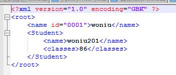
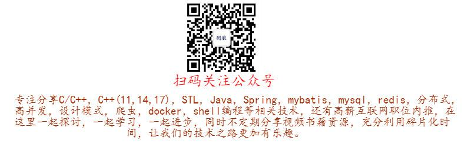

1.xml 指可扩展标记语言(EXtensible Markup Language)
2.xml 是一种标记语言，类似html
3.xml 的设计宗旨是传输数据，而非显示数据
4.xml 标签没有被预定义。需要自行定义标签
1.xml 不是 html 的替代。
2.xml 和 html 为不同的目的而设计：
3.xml 被设计为传输和存储数据，其焦点是数据的内容。
4.html 被设计用来显示数据，其焦点是数据的外观。
5.html 旨在显示信息，而 xml 旨在传输信息。
XML第三方解析库,选用TinyXML,TinyXML也是一个开源的解析XML解析库，使用简单正如其名，用于C++开发，支持Windows和Linux。TinyXML通过DOM模型遍历和分析XML。
官网地址：http://www.grinninglizard.com/tinyxml/
TiXmlDocument xmlDocument;
// 添加XML声明
xmlDocument.LinkEndChild(new TiXmlDeclaration( "1.0", "GBK", "" ));
// 添加根元素
TiXmlElement * xmlRoot = new TiXmlElement("root");
xmlDocument.LinkEndChild(xmlRoot);
//根元素下添加子元素1
TiXmlElement* xmlChild1 = new TiXmlElement("name");
xmlRoot->LinkEndChild(xmlChild1);
xmlChild1->LinkEndChild(new TiXmlText("woniu"));
xmlChild1->SetAttribute("id", "0001");//设置属性
//根元素下添加子元素2
TiXmlElement* xmlChild2 = new TiXmlElement("Student");
xmlRoot->LinkEndChild(xmlChild2);
TiXmlElement* xmlChild2_01 = new TiXmlElement("name");
xmlChild2->LinkEndChild(xmlChild2_01);
xmlChild2_01->LinkEndChild(new TiXmlText("woniu201"));
TiXmlElement* xmlChild2_02 = new TiXmlElement("classes");
xmlChild2->LinkEndChild(xmlChild2_02);
xmlChild2_02->LinkEndChild(new TiXmlText("86"));
//保存xml文件
xmlDocument.SaveFile("woniu.xml");生成XML如下：

TiXmlDocument xmlDocument;
if (!xmlDocument.LoadFile("woniu.xml"))
{
return -1;
}
//根节点
TiXmlElement* xmlRoot = xmlDocument.RootElement();
if (xmlRoot == NULL)
{
return -1;
}
//获取子节点信息1
TiXmlElement* xmlNode1Name = xmlRoot->FirstChildElement("name");
const char* node1Name = xmlNode1Name->GetText();
const char* node1AttId = xmlNode1Name->Attribute("id");
//获取子节点信息2
TiXmlElement* xmlNode2Stu = xmlRoot->FirstChildElement("Student");
TiXmlElement* xmlNode2_name = xmlNode2Stu->FirstChildElement("name");
TiXmlElement* xmlname2_classes = xmlNode2Stu->FirstChildElement("classes");
const char* node2Name = xmlNode2_name->GetText();
const char* node2Classes = xmlname2_classes->GetText();关注下面公众号，回复"101"获取源码
